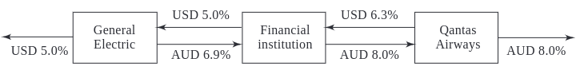

Currency Swaps
Contents
Currency Swaps#
Fixed-for-Fixed Currency Swaps#
Consider a hypothetical five-year currency swap agreement between British Petroleum and Barclays.
British Petroleum pays a fixed rate of interest of 3% in dollars to Barclays and receives a fixed rate of interest of 4% in British pounds (sterling) from Barclays.
Interest rate payments are made once a year.
The principal amounts are USD 15 million and GBP 10 million.
This is termed a fixed-for-fixed currency swap because the interest rate in both currencies is fixed.
In an interest rate swap the principal is not exchanged.
In a currency swap the principal is exchanged at the beginning and the end of the swap.
Cash flows to British Petroleum in currency swap.
Date |
Dollar cash flow (millions) |
Sterling cash flow (millions) |
|---|---|---|
February 1, 2022 |
+15.00 |
-10.00 |
February 1, 2023 |
-0.45 |
+ 0.40 |
February 1, 2024 |
-0.45 |
+ 0.40 |
February 1, 2025 |
-0.45 |
+ 0.40 |
February 1, 2026 |
-0.45 |
+ 0.40 |
February 1, 2027 |
-15.45 |
+ 10.40 |
Typical Uses of a Currency Swap#
Conversion from a liability in one currency to a liability in another currency.
Conversion from an investment in one currency to an investment in another currency.
Comparative Advantage Example#
Comparative advantage may be real because of taxes.
General Electric wants to borrow AUD.
Quantas wants to borrow USD.
Borrowing costs after adjusting for the differential impact of taxes could be:
USD |
AUD |
|
|---|---|---|
General Electric |
5.0% |
7.6% |
Qantas Airways |
7.0% |
8.0% |

Valuation of Fixed-for-Fixed Currency Swaps#
Each exchange of payments in a fixed-for-fixed currency swap is a forward contract.
Forward foreign exchange contracts can be valued by assuming that forward exchange rates are realized.
A fixed-for-fixed currency swap can therefore be valued assuming that forward rates are realized.
Example of Valuation in Terms of Forward Rates#
All Japanese interest rates are 1.5% per annum (cont. comp.).
All USD interest rates are 2.5% per annum (cont. comp.).
3% is received in yen; 4% is paid in dollars.
Payments are made annually.
Principals are USD 10 million and 1,200 million yen.
Swap will last for 3 more years.
Current exchange rate is 110 yen per dollar.
Time (years) |
Dollar cash flow |
Yen cash flow |
Forward exchange rate |
Dollar value of yen cash flow |
Net cash flow |
Present value |
|---|---|---|---|---|---|---|
1 |
-0.4 |
+ 36 |
0.009182 |
0.3306 |
-0.0694 |
-0.0677 |
2 |
-0.4 |
+ 36 |
0.009275 |
0.3339 |
-0.0661 |
-0.0629 |
3 |
-10.4 |
+ 1236 |
0.009368 |
11.5786 |
+ 1.1786 |
+ 1.0934 |
Total |
+ 0.9629 |
The financial institution pays \(0.04 \times 10 = \$0.4\) million dollars and receives \(1,200 \times 0.03 = 36\) million yen each year.
In addition, the dollar principal of $10 million is paid and the yen principal of 1,200 million is received at the end of year 3.
The current spot rate is \(1/110 = 0.009091\) dollar per yen.
In this case, \(r = 2.5\%\) and \(r_f = 1.5\%\) so that the one-year forward exchange rate is, \(0.009091 \times e^{(0.025-0.015) \times 1} = 0.009182\)
The two- and three-year forward exchange rates in the table are calculated similarly.
The forward contracts underlying the swap can be valued by assuming that the forward exchange rates are realized.
If the one-year forward exchange rate is realized, the value of yen cash flow in year 1 will be \(36 \times 0.009182 = 0.3306\) million dollars and the net cash flow at the end of year 1 will be \(0.3306 - 0.4 = -0.0694\) million dollars.
This has a present value of \(-0.0694 \times e^{-0.025 \times 1} = -0.0677\) million dollars.
This is the value of the forward contract corresponding to the exchange of cash flows at the end of year 1.
The value of the other forward contracts are calculated similarly.
As shown in the table, the total value of the forward contracts is \(\$0.9629\) million.
Other Currency Swaps#
Fixed-for-Floating#
Fixed-for-floating: equivalent to a fixed-for-fixed currency swap plus a fixed for floating interest rate swap.
An example of the first type of swap would be an exchange where Sterling Floating rate on a principal of GBP 7 million is paid and 3% on a principal of $10 million is received with payments being made semiannually for 10 years.
A swap where 3% on a principal of $10 million is received and (say) 4% on a principal of GBP 7 million is paid.
An interest rate swap where 4% is received and sterling Floating rate is paid on anotional principal of GBP 7 million.
Floating-for-Floating#
Floating-for-floating: equivalent to a fixed-for-fixed currency swap plus two floating interest rate swaps.
An example of the second type of swap would be the exchange where sterling Floating rate on a principal of GBP 7 million is paid and dollar Floating rate on a principal of $10 million is received.
A swap where 3% on aprincipal of $10 million is received and 4% on a principal of GBP 7 million is paid.
an interest rate swap where 4% is received and sterling Floating rate is paid on a notional principal of GBP 7 million.
an interest rate swap where 3% is paid and USD Floating rate is received on a notional principal of $10 million.